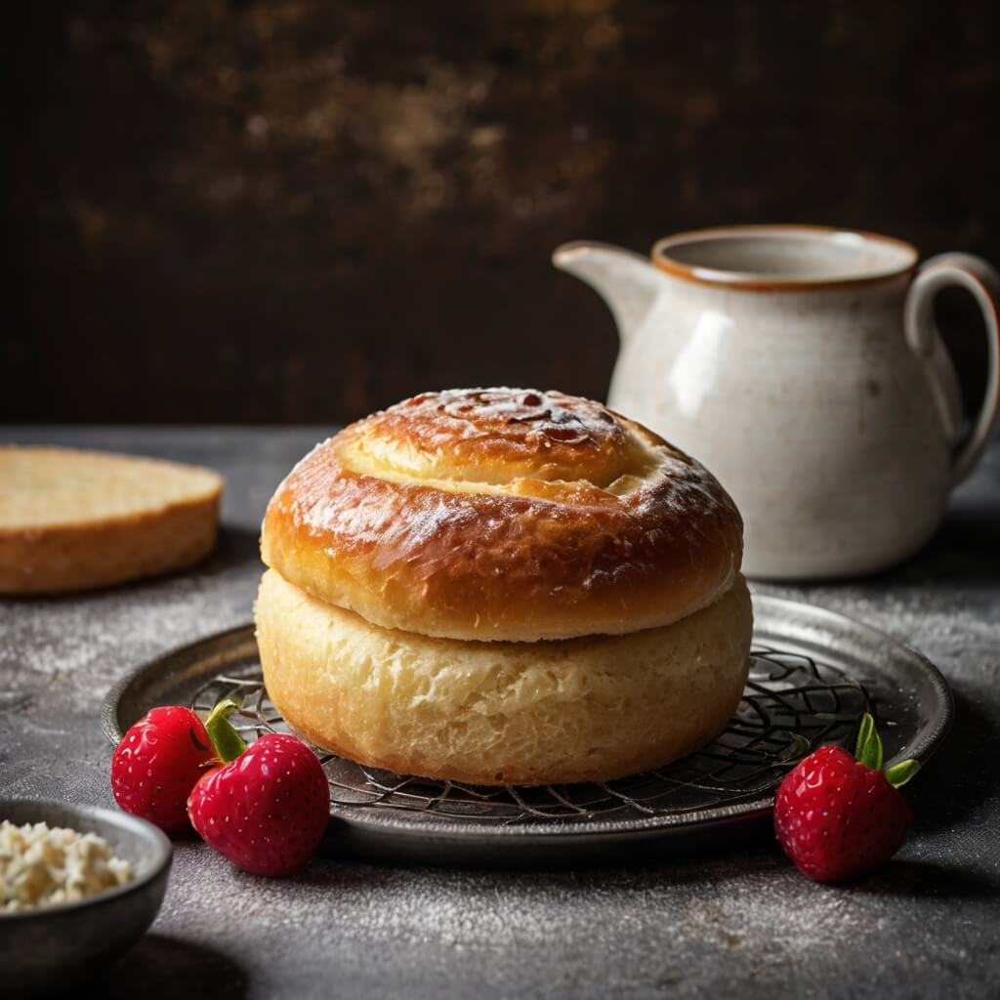
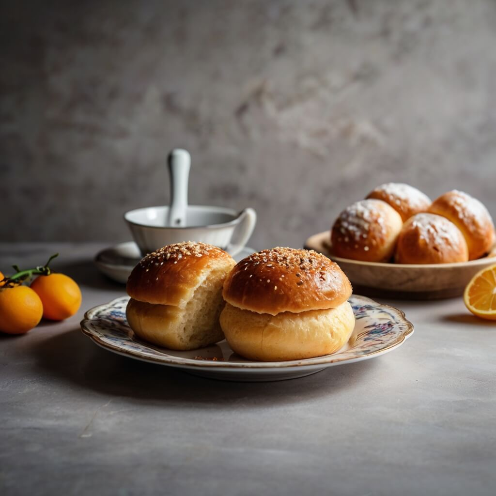
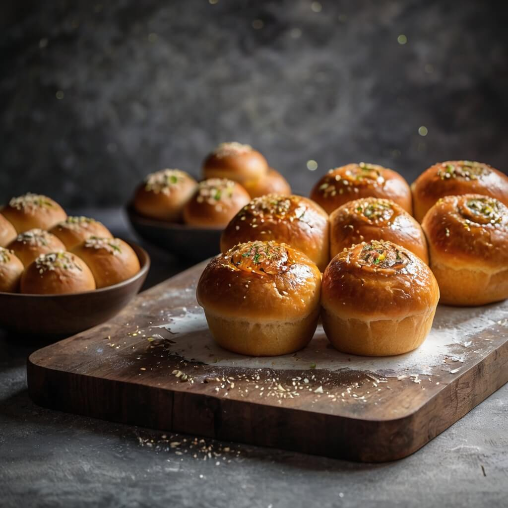
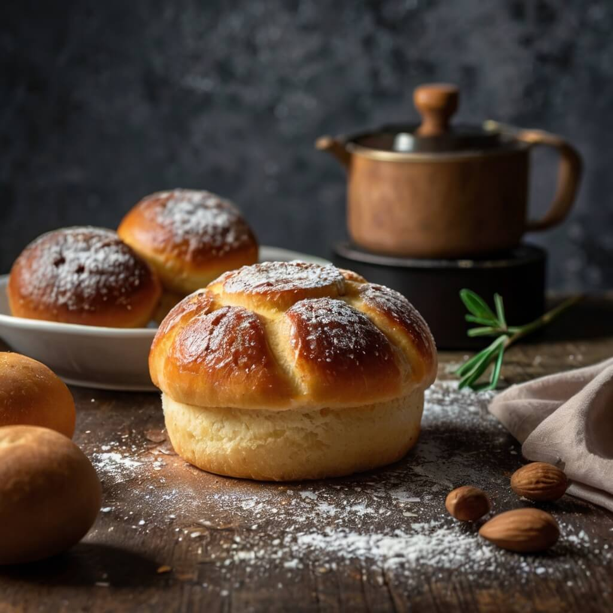

SavorSphere ile Sofranıza Sanat Katın
Lezzetin sınırlarını zorlamaya hazır mısınız? SavorSphere, mutfağınıza yeni tatlar ve eşsiz deneyimler getiriyor. İster geleneksel bir reçeteyi yeniden keşfedin, ister yaratıcı dokunuşlar ekleyin—bizimle her tarif özel!
- Gizli mutfak sırlarını keşfedin ve yemeklerinizde sihir yaratın
- Her malzeme ile yeni bir hikâye yazın
- Lezzet dolu anlarla günü güzelleştirin
- Sevdiklerinizle sofrada unutulmaz anılar biriktirin

SavorSphere, mutfağa duyulan tutkudan doğdu ve her yemeği bir deneyime dönüştürme arzusuyla büyüdü.
Malzeme seçiminden son dokunuşa kadar, SavorSphere yemek yapma sürecini keyifli ve zahmetsiz hale getiriyor. Deneyiminiz ne olursa olsun, size mutfakta ilham verecek tarifler, ipuçları ve araçlar sunuyoruz. Şimdi şef şapkanızı takma zamanı!
SavorSphere, mutfak sanatına duyulan tutkuyu birleştirerek yemek yapmayı seven herkes için eşsiz bir deneyim sunuyor. İlham verici tarifler, uzman şefler ve unutulmaz lezzetlerle dolu bir yolculuğa çıkmaya hazır olun!

"SavorSphere sayesinde mutfak alışverişim bambaşka bir seviyeye çıktı! Ürünlerin kalitesi gerçekten muazzam, her şey taptaze ve büyük bir özenle paketlenmiş. Özellikle baharat çeşitleri ve özel mutfak gereçleri, yemek yapma deneyimimi çok daha keyifli hale getirdi. Üstelik siparişlerim her zaman zamanında ve eksiksiz geliyor. Kesinlikle tavsiye ederim!"
- Ahmet K.
"Mutfakta vakit geçirmeyi her zaman sevmişimdir ama SavorSphere ile bu tutkum daha da arttı! Hem malzeme kalitesi hem de sunulan ilham verici tarifler sayesinde kendimi geliştirme fırsatı yakaladım. Kullanıcı dostu web sitesi ve hızlı müşteri hizmetleri de cabası! Özellikle denediğim özel soslar ve organik ürünler gerçekten harikaydı."
- Elif D.
"Yemek yapmayı her zaman severdim ama SavorSphere ile mutfağa olan ilgim bambaşka bir boyuta taşındı. Buradan aldığım malzemeler sayesinde en sevdiğim tarifleri çok daha lezzetli hale getirebiliyorum. Üstelik denemem için her zaman yeni ve özel içerikler sunuluyor. Sadece ürün değil, aynı zamanda mükemmel bir yemek kültürü sunuyorlar!"
- Mehmet Y.
"Mutfağa olan ilgim zamanla azalmıştı ama SavorSphere bana ilham verdi! Sitede bulunan özel tarifler ve kaliteli mutfak ürünleri sayesinde, tekrar mutfağa dönüp yemek yapmaya başladım. Özellikle şef önerileri ve ipuçları inanılmaz faydalı! Daha önce hiç denemediğim lezzetleri keşfetmek harika bir deneyim oldu."
- Zeynep T.
"SavorSphere ile tanıştıktan sonra yemek yapmanın sadece bir zorunluluk değil, aynı zamanda büyük bir keyif olduğunu fark ettim. Buradan edindiğim taze ve kaliteli malzemelerle denediğim her tarif muhteşem sonuçlar verdi. Müşteri hizmetleri çok ilgili ve sipariş süreci de son derece pratik. Eğer mutfağı seviyorsanız, burası tam size göre!"
- Canan S.
Lezzet Tutkunları İçin SavorSphere

Lezzetin Kökeni
SavorSphere ile yemek yapmanın sanata dönüştüğü bir dünyaya adım atın. Mutfağın keyfini çıkarın, yeni tarifler deneyin ve lezzet dolu anlar yaşayın. Sofranıza kattığınız her dokunuş bir hikâye anlatıyor. Şimdi mutfakta sizin zamanınız! Yeni tatlar keşfedin, yaratıcılığınızı ön plana çıkarın ve yemek yapmanın ne kadar keyifli olabileceğini görün. Her tarif, her malzeme, her adım, mutfağınızda unutulmaz anılar oluşturmanız için bir fırsat sunuyor. SavorSphere ile, yemek yapmayı sadece bir ihtiyaçtan öte, bir tutkuya dönüştürün.
Her Damak Zevkine Uygun Tarifler
Kolay ve Pratik Tarifler
